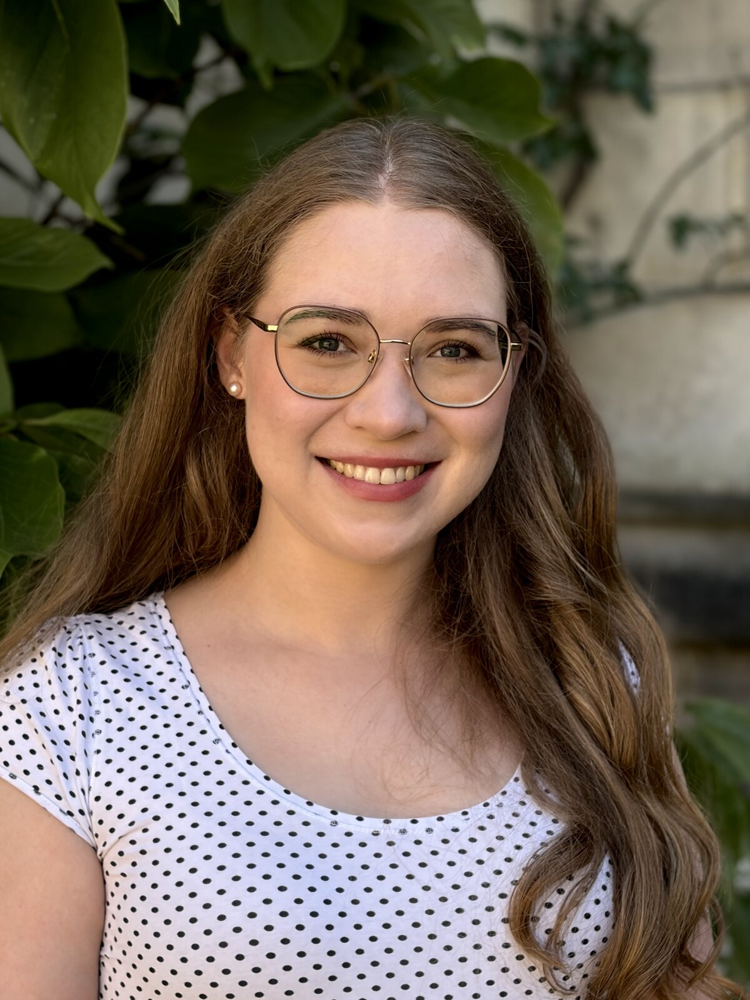

Marta Emilia Bielińska
Junior Research Fellow
Pembroke College, University of Oxford
I am a philosopher of physics with a particular interest in the foundations of physics, including the epistemology of non-metrical spacetime structure, hidden symmetries, and laws of nature. I am also interested in philosophy of religion and analytic ontology.
I studied philosophy, mathematical and theoretical physics, and theology at the University of Oxford, and before that physics and philosophy in Kraków. Before returning to Oxford to take up my Junior Research Fellowship, I was a postdoctoral fellow at the University of Pittsburgh.
